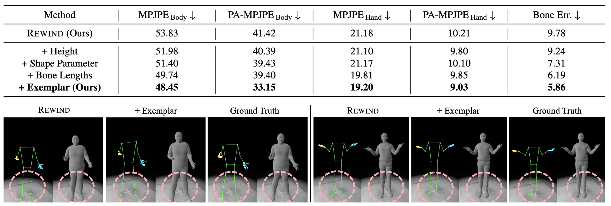
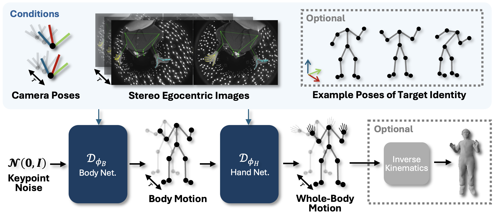

We present 🕑🚶♂️REWIND (Real-Time Egocentric Whole-Body Motion Diffusion), a one-step diffusion model for real-time, high-fidelity human motion estimation from egocentric image inputs. While an existing method for egocentric whole-body (i.e., body and hands) motion estimation is non-real-time and acausal due to diffusion-based iterative motion refinement to capture correlations between body and hand poses, REWIND operates in a fully causal and real-time manner. To enable real-time inference, we introduce (1) cascaded body-hand denoising diffusion, which effectively models the correlation between egocentric body and hand motions in a fast, feed-forward manner, and (2) diffusion distillation, which enables high-quality motion estimation with a single denoising step. Our denoising diffusion model is based on a modified Transformer architecture, designed to causally model output motions while enhancing generalizability to unseen motion lengths. Additionally, REWIND optionally supports identity-conditioned motion estimation when identity prior is available. To this end, we propose a novel identity conditioning method based on a small set of pose exemplars of the target identity, which further enhances motion estimation quality. Through extensive experiments, we demonstrate that REWIND significantly outperforms the existing baselines both with and without exemplar-based identity conditioning.
REWIND estimates plausible motions even from challenging egocentric inputs (e.g., occluded or truncated observations). Especially, its reconstructed hand motions are highly expressive. Note that these motions are estimated in real-time and in a fully causal manner (i.e., without relying on future information).
REWIND estimates significantly more accurate and natural motions than existing state-of-the-art methods.
REWIND optionally supports identity-aware egocentric motion estimation to further enhance output motion quality. To this end, we propose novel exemplar-based identity conditioning, where the output motion style is conditioned on the target identity parameterized by a small set of pose exemplars. We empirically find this examplar-based identity paramerization is the most effective compared to existing identity parameterizations (e.g., height, bone lengths, shape parameters).
Given a sequence of stereo egocentric images and camera poses, REWIND first estimates 3D body motion and then estimates 3D hand motion conditioned on the 3D upper body motion via one-step denoising diffusion. The motion estimation can be optionally conditioned on the exemplar-based identity prior to further enhance the output motion quality. Through an optional inverse kinematics step, the tracking results can be seamlessly used to drive meshes or photorealistic avatars in real time.
@inproceedings{lee2025rewind,
title={REWIND: Real-Time Egocentric Whole-Body Motion Diffusion with Exemplar-Based Identity Conditioning},
author={Lee, Jihyun and Xu, Weipeng and Richard, Alexander and Wei, Shih-En and Saito, Shunsuke and Bai, Shaojie and Wang, Te-Li and Sung, Minhyuk and Kim, Tae-Kyun and Saragih, Jason},
booktitle={CVPR},
year={2025}
}